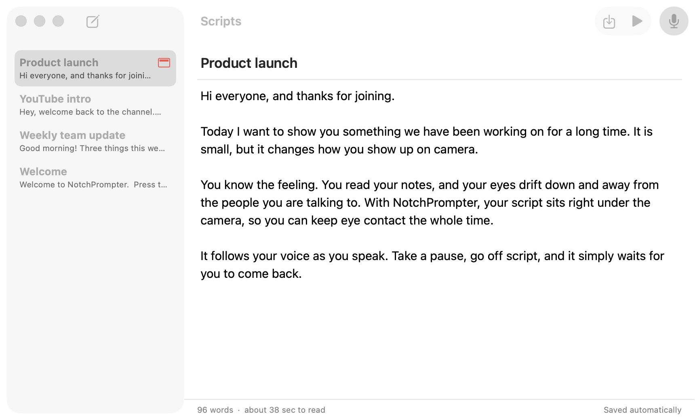
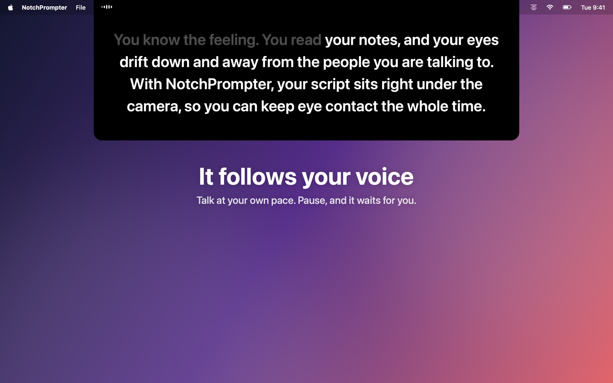
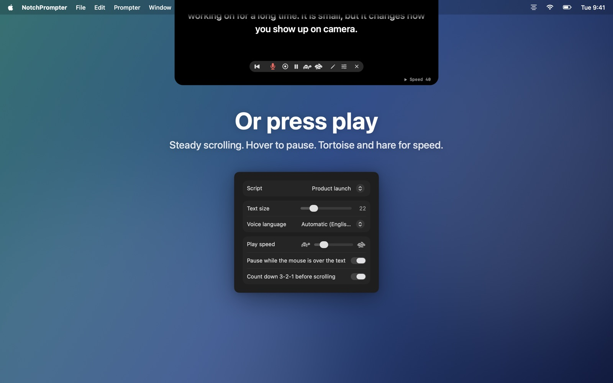
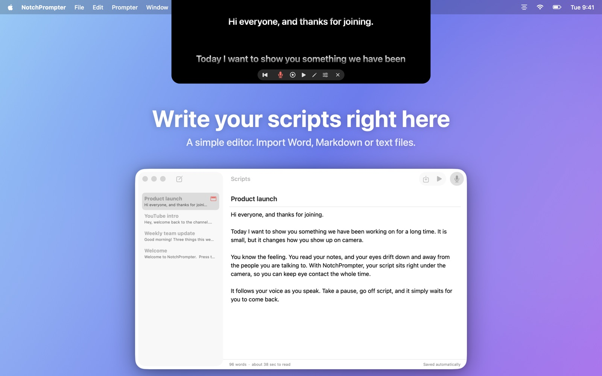
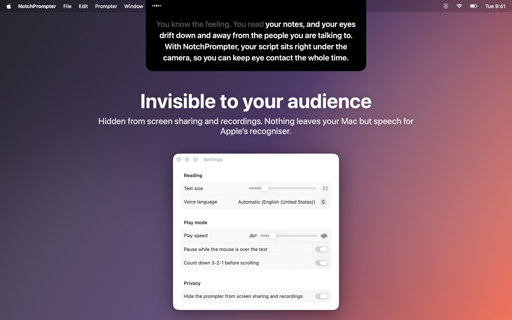

邊讀講稿，邊保持眼神接觸
NotchPrompter 把講稿放在相機正下方，並跟著你的聲音走。任何語言都行，跳著讀也沒問題，而且完全在 Mac 上執行。
免費且開放原始碼。適用於 macOS 15 Sequoia 或以後版本。在有瀏海的 MacBook 上效果最好，頂端有相機的任何 Mac 也都能用。
實際看看
朗讀、停頓、跳著讀，提詞機都跟得上你。
該有的都有，礙事的全沒有。
相機下方的一塊黑色小面板、幾個清楚的按鈕、一個用來寫講稿的小編輯器，還有一個錄影按鈕。
跟著你的聲音走
按下麥克風，開口說話。接下來的字永遠在相機正下方，說過的字會逐漸淡出。
任何語言，自動辨識
NotchPrompter 會辨識講稿使用的語言，並用這個語言來聆聽。支援英文、挪威文、德文、西班牙文、日文等數十種語言。
跳著讀也跟得上
跳過一句、換個字、說聲「呃」都沒關係。它會找到你讀到哪裡，和你一起往前跳。你停下來，它就等著。
或者按下播放
3-2-1 倒數後平順捲動。將指標停在上方即可暫停，用烏龜和兔子按鈕調整速度。
內建編輯器
在同一個地方撰寫並保存所有講稿。可以匯入 Word、Markdown、RTF 或文字檔案。會自動儲存。
錄下自己
按下錄影，就能在朗讀時用相機和麥克風拍下自己。每一次拍攝都會以影片的形式儲存在「影片」檔案夾中。
觀眾看不到
在螢幕共享、截圖和螢幕錄影中都會隱藏。只有你自己看得到。
完全在 Mac 上執行
語音在你的 Mac 上辨識，而不是在雲端。不需要帳號，沒有追蹤。你的講稿和錄影絕不會離開你的 Mac。
講稿，按一下就到
按一下提詞機中的鉛筆即可打開編輯器。選一份講稿，按下麥克風，開始說話。
- 撰寫或貼上講稿，或匯入檔案。
- 按下語音跟讀。
- 看著相機說話。

為鏡頭而生
視訊通話、YouTube、課程、線上研討會和提案簡報。




常見問題
真的免費嗎？
是的。NotchPrompter 免費且開放原始碼，採用 MIT 授權。沒有廣告，沒有訂閱，不需要帳號。原始碼放在 GitHub 上，你可以在那裡回報錯誤、建議功能或參與開發。
沒有瀏海也能用嗎？
可以。在沒有瀏海的 Mac 上，提詞機會掛在螢幕頂端、選單列下方，依然很靠近相機。
語音跟隨支援哪些語言？
數十種，包括英文、挪威文、德文、法文、西班牙文、中文和日文。NotchPrompter 會辨識講稿使用的語言並用它來聆聽，所以你不需要做任何設定。你也可以在設定中選擇其他語言。
分享螢幕時，別人會看到提詞機嗎？
不會。依照預設，它在螢幕共享、截圖和螢幕錄影中都會隱藏。如果想顯示它，可以在設定中關閉這個選項。
有任何內容會傳到雲端嗎？
沒有。語音在你的 Mac 上辨識（需在系統設定中開啟聽寫），NotchPrompter 也沒有伺服器。語音跟隨絕不儲存音訊。只有在你按下錄影時才會儲存影片，而且是存在你自己的「影片」檔案夾中。請閱讀隱私權政策。
有哪些鍵盤快速鍵？
先按一下提詞機，然後：空白鍵 播放/暫停，V 語音，C 錄影，R 回到頂端，↑ ↓ 速度，+ − 文字大小，E 編輯器，Esc 停止。